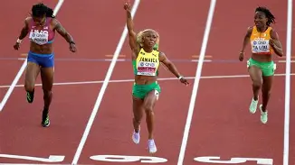

What Is Track and Field?
Track and field includes running, jumping, and throwing events. Athletes compete in different events based on their strengths.
Running events range from short sprints to middle-distance and long-distance races. Each event requires speed, endurance, and consistent training.

Popular Distance Events
Distance running requires endurance, pacing, and mental strength.
Common Running Events
- 800 meters
- 1500 meters
- 5000 meters
- 10000 meters
Why Training Matters
Training helps runners become faster, stronger, and more prepared for races.
Runners often combine easy runs, speed workouts, strength training, and recovery days.
My Interest in Track and Field
Track and field allows athletes to challenge themselves and work toward personal goals. Improving race times takes dedication and consistent effort.
Every second matters when trying to achieve a personal best.